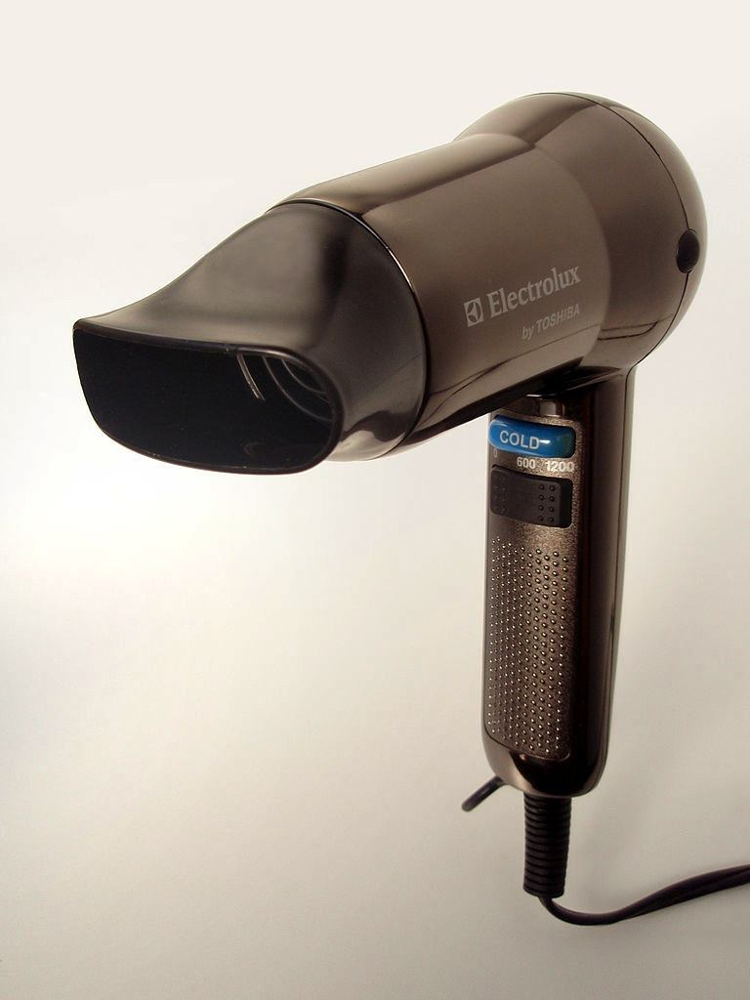
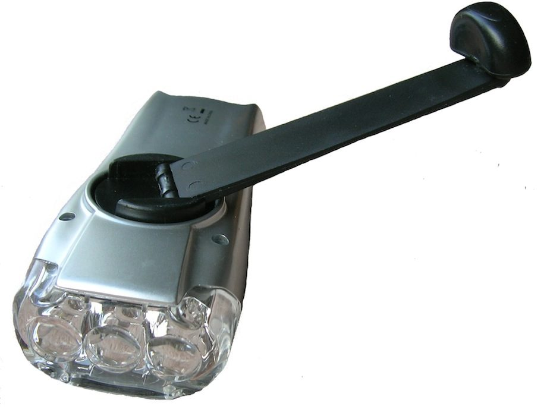

When current passes through an electrical appliance (or electrical component), energy is transferred to it from the power supply. Some energy may also be transferred to the environment as wasted energy.
Edexcel: Current is the rate of flow of charge. Voltage is the ‘electrical pressure’ that pushes the charge – the greater the voltage, the more energy the flowing charge can transfer.
We use electrical appliances to transfer energy from an electricity supply to other forms of useful energy. For example, an electric kettle transfers electrical energy to thermal energy (heating water).
Electrical appliances are very convenient to use – they transfer electrical energy to useful energy at the flick of a switch.
The table lists some everyday electrical appliances and the useful energy they are designed to provide:
Appliance
Useful energy
lamp
light
hairdryer
thermal energy in heated air;
kinetic energy of moving air
radio
sound
vacuum cleaner
kinetic energy of rotating brushes;
kinetic energy of air and dust particles
electric fan
kinetic energy of moving air
TV
light and sound
Many appliances contain electric motors – vacuum cleaners, fans, hairdryers, fridges. A motor transfers electrical energy to mechanical movement (kinetic energy).
Energy that is transferred to the environment is wasted energy. Wasted energy is often in the form of sound or heat. A noisy hairdryer wastes more energy than a quiet one.

Energy that could have been useful is lost as sound in this appliance
Alternative power supplies (AQA)
Mains electricity is not always available. Away from the mains supply, electrical devices can be powered by batteries or by mechanical means.
Wind-up torches produce light using low-power LEDs. Winding the torch for 1 minute can give 20 minutes of light. The torch has an internal rechargeable battery that is charged by turning the handle.

Solar chargers transfer solar energy to electrical energy in rechargeable batteries. Portable solar chargers can be used with mobile phones and laptop computers.
The Baylis wind-up radio is powered using a clockwork spring. The user turns a handle to wind up the spring. As it gradually unwinds, the spring turns a generator that powers the radio. It does not need batteries.